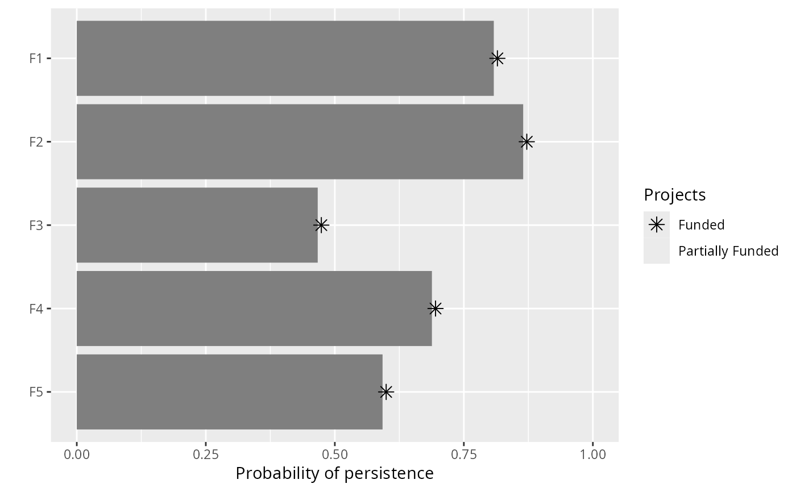
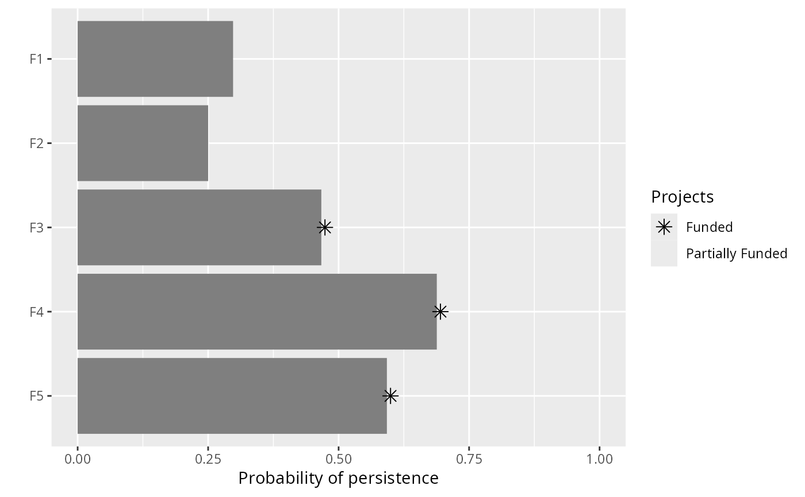
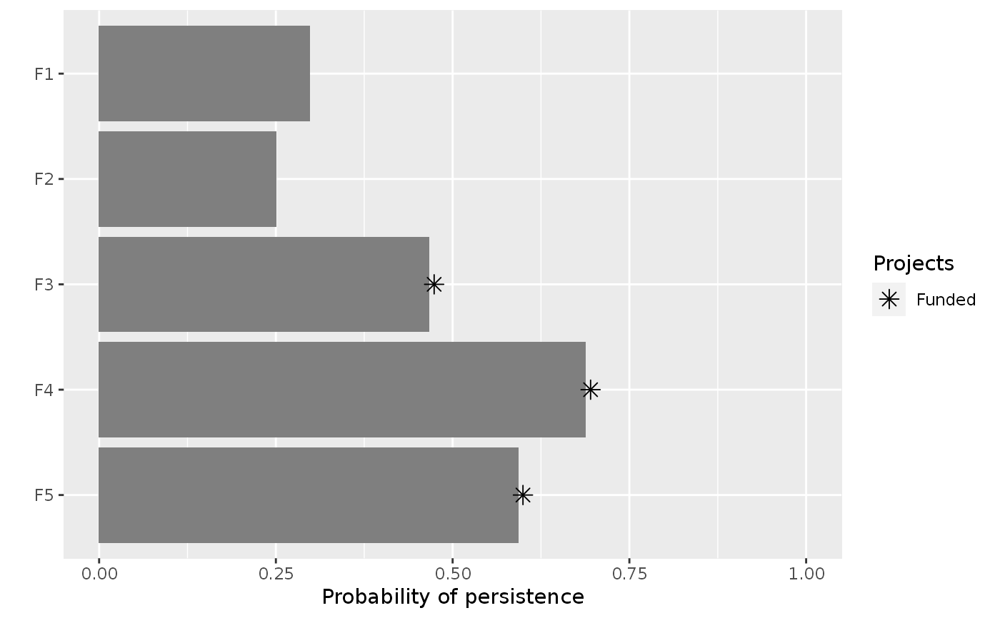

Set targets for a project prioritization problem by
specifying exactly what probability of persistence is required
for each feature. For instance, setting an absolute target of 10%
(i.e. 0.1) corresponds to a threshold 10% probability of persisting.
# S4 method for ProjectProblem,numeric add_absolute_targets(x, targets) # S4 method for ProjectProblem,character add_absolute_targets(x, targets)
| x |
|
|---|---|
| targets | Object that specifies the targets for each feature. See the Details section for more information. |
Targets are used to specify the minimum probability of persistence
for each feature in solutions. For minimum set objectives
(i.e. add_min_set_objective, these targets
specify the minimum probability of persistence required for each species
in the solution. And for budget constrained objectives that use targets
(i.e.add_max_targets_met_objective), these targets
specify the minimum threshold probability of persistence that needs to be
achieved to count the benefits for conserving these species.
Please note that attempting to solve problems with objectives that require
targets without specifying targets will throw an error.
The targets for a problem can be specified in several different ways:
numericvector of target values for each feature.
The order of the target values should correspond to the order
of the features in the data used to create the argument to x.
Additionally, for convenience, this type of argument can be a single
value to assign the same target to each feature.
characterspecifying the name of column in the
feature data (i.e. the argument to features in the
problem function) that contains the persistence targets.
# load data data(sim_projects, sim_features, sim_actions) # build problem with minimum set objective and targets that require each # feature to have a 30% chance of persisting into the future p1 <- problem(sim_projects, sim_actions, sim_features, "name", "success", "name", "cost", "name") %>% add_min_set_objective() %>% add_absolute_targets(0.3) %>% add_binary_decisions() # print problem print(p1)#> #> #> #> #> #> #> #> #> #> #> #># build problem with minimum set objective and specify targets that require # different levels of persistence for each feature p2 <- problem(sim_projects, sim_actions, sim_features, "name", "success", "name", "cost", "name") %>% add_min_set_objective() %>% add_absolute_targets(c(0.1, 0.2, 0.3, 0.4, 0.5)) %>% add_binary_decisions() # print problem print(p2)#> #> #> #> #> #> #> #> #> #> #> #># add a column name to the feature data with targets sim_features$target <- c(0.1, 0.2, 0.3, 0.4, 0.5) # build problem with minimum set objective and specify targets using # column name in the feature data p3 <- problem(sim_projects, sim_actions, sim_features, "name", "success", "name", "cost", "name") %>% add_min_set_objective() %>% add_absolute_targets("target") %>% add_binary_decisions() # print problem print(p3)#> #> #> #> #> #> #> #> #> #> #> #>#> Optimize a model with 46 rows, 42 columns and 92 nonzeros #> Variable types: 0 continuous, 42 integer (42 binary) #> Coefficient statistics: #> Matrix range [9e-02, 1e+00] #> Objective range [9e+01, 1e+02] #> Bounds range [1e+00, 1e+00] #> RHS range [3e-01, 1e+00] #> Found heuristic solution: objective 497.7671458 #> Presolve removed 45 rows and 20 columns #> Presolve time: 0.00s #> Presolved: 1 rows, 22 columns, 2 nonzeros #> Variable types: 0 continuous, 22 integer (22 binary) #> #> Explored 0 nodes (0 simplex iterations) in 0.00 seconds #> Thread count was 1 (of 4 available processors) #> #> Solution count 1: 497.767 #> #> Optimal solution found (tolerance 0.00e+00) #> Best objective 4.977671458279e+02, best bound 4.977671458279e+02, gap 0.0000%#> Optimize a model with 46 rows, 42 columns and 92 nonzeros #> Variable types: 0 continuous, 42 integer (42 binary) #> Coefficient statistics: #> Matrix range [9e-02, 1e+00] #> Objective range [9e+01, 1e+02] #> Bounds range [1e+00, 1e+00] #> RHS range [1e-01, 1e+00] #> Found heuristic solution: objective 403.3678534 #> Presolve removed 31 rows and 14 columns #> Presolve time: 0.00s #> Presolved: 15 rows, 28 columns, 30 nonzeros #> Variable types: 0 continuous, 28 integer (28 binary) #> Presolved: 15 rows, 28 columns, 30 nonzeros #> #> #> Root relaxation: objective 3.023765e+02, 4 iterations, 0.00 seconds #> #> Nodes | Current Node | Objective Bounds | Work #> Expl Unexpl | Obj Depth IntInf | Incumbent BestBd Gap | It/Node Time #> #> * 0 0 0 302.3764827 302.37648 0.00% - 0s #> #> Explored 0 nodes (4 simplex iterations) in 0.00 seconds #> Thread count was 1 (of 4 available processors) #> #> Solution count 1: 302.376 #> #> Optimal solution found (tolerance 0.00e+00) #> Best objective 3.023764827378e+02, best bound 3.023764827378e+02, gap 0.0000%#> Optimize a model with 46 rows, 42 columns and 92 nonzeros #> Variable types: 0 continuous, 42 integer (42 binary) #> Coefficient statistics: #> Matrix range [9e-02, 1e+00] #> Objective range [9e+01, 1e+02] #> Bounds range [1e+00, 1e+00] #> RHS range [1e-01, 1e+00] #> Found heuristic solution: objective 403.3678534 #> Presolve removed 31 rows and 14 columns #> Presolve time: 0.00s #> Presolved: 15 rows, 28 columns, 30 nonzeros #> Variable types: 0 continuous, 28 integer (28 binary) #> Presolved: 15 rows, 28 columns, 30 nonzeros #> #> #> Root relaxation: objective 3.023765e+02, 4 iterations, 0.00 seconds #> #> Nodes | Current Node | Objective Bounds | Work #> Expl Unexpl | Obj Depth IntInf | Incumbent BestBd Gap | It/Node Time #> #> * 0 0 0 302.3764827 302.37648 0.00% - 0s #> #> Explored 0 nodes (4 simplex iterations) in 0.00 seconds #> Thread count was 1 (of 4 available processors) #> #> Solution count 1: 302.376 #> #> Optimal solution found (tolerance 0.00e+00) #> Best objective 3.023764827378e+02, best bound 3.023764827378e+02, gap 0.0000%#> # A tibble: 1 x 15 #> solution status obj cost F1_action F2_action F3_action F4_action F5_action #> <int> <chr> <dbl> <dbl> <dbl> <dbl> <dbl> <dbl> <dbl> #> 1 1 OPTIM… 498. 498. 1 1 1 1 1 #> # … with 6 more variables: baseline_action <dbl>, F1 <dbl>, F2 <dbl>, F3 <dbl>, #> # F4 <dbl>, F5 <dbl>print(s2)#> # A tibble: 1 x 15 #> solution status obj cost F1_action F2_action F3_action F4_action F5_action #> <int> <chr> <dbl> <dbl> <dbl> <dbl> <dbl> <dbl> <dbl> #> 1 1 OPTIM… 302. 302. 0 0 1 1 1 #> # … with 6 more variables: baseline_action <dbl>, F1 <dbl>, F2 <dbl>, F3 <dbl>, #> # F4 <dbl>, F5 <dbl>print(s3)#> # A tibble: 1 x 15 #> solution status obj cost F1_action F2_action F3_action F4_action F5_action #> <int> <chr> <dbl> <dbl> <dbl> <dbl> <dbl> <dbl> <dbl> #> 1 1 OPTIM… 302. 302. 0 0 1 1 1 #> # … with 6 more variables: baseline_action <dbl>, F1 <dbl>, F2 <dbl>, F3 <dbl>, #> # F4 <dbl>, F5 <dbl>